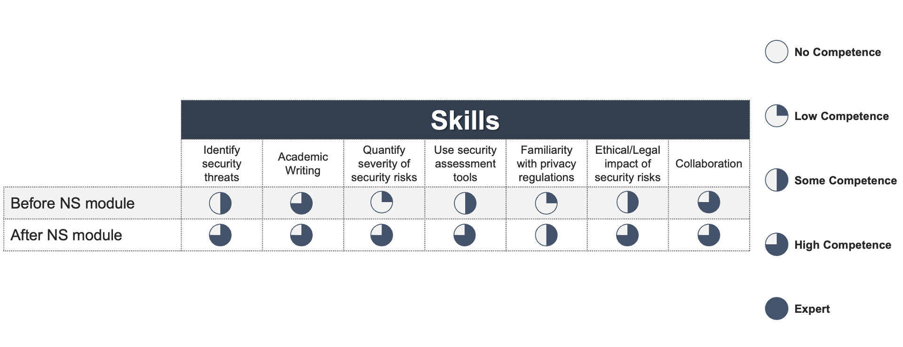

Reflections on the Network Security module, and own self-development

In this reflective piece, I summarise the knowledge I acquired and the lessons I learnt during the Network Security (NS) module as a part of my Master’s degree course in Computer Science at the University of Essex. Furthermore, I describe how I enhanced my network and information security-related skills, as well as my soft skills, throughout this module and gained a deeper understanding of network security that can aid in my career progression.
To articulate the key take-home messages in a structured form, I used the nursing-like framework to guide reflective writing (Bulman & Schutz, 2013), as software development lacks a unified model for making such reflections, beyond merely having verbal Scrum retrospective sessions in Agile (Andriyani et al., 2017).
First, the NS module is focused on providing the required theoretical background on carrying out vulnerability assessments (Peltier et al., 2017), provisioning security in information networks based on industry-grade protocols and architectures, as well as understanding how to leverage monitoring and logging tools for enhancing the security of applications (Al-Mahbashi et al., 2017; Yamin et al., 2020). Throughout this module, I had the opportunity to appreciate the importance of thinking like a cyber-attacker in planning and carrying out comprehensive vulnerability assessments and penetration tests to identify areas to improve the security of software-based applications (Esteves et al., 2017; Luh & Yen, 2020). This attitude and the related professional practice aim to achieve the key business and technical requirements whilst ensuring a secure design that accounts for users-related ethical considerations and complying with relevant regulations, e.g., the General Data Protection Regulation (GDPR) and the Medical Device Regulation (MDR) for protecting the privacy of European Union’s citizens’ data and that of health-related information in information and network systems respectively (Thapa & Camtepe, 2021; Calcagnini et al., 2022), thus preventing or, at least, mitigating the social impact that security vulnerabilities in software may have. Via collaborative discussions on these topics, along with a successful cooperation and presentation with two peers in discussing technologies for the future of the Internet, such as peer-to-peer overlay networks (Naik & Keshavamurthy, 2020), I learnt from these interactions to compare tools and strategies to enhance network security for industry-grade and emerging applications, such as improving the experience of passengers in autonomous vehicles whilst handling and leveraging their data securely (Ameur et al., 2022).
I was delighted to learn how to perform a vulnerability audit and assessment via an appropriate baseline analysis and plan of the website I was assigned, which garnered positive feedback. Outlining the possible security vulnerabilities leveraging threat modelling frameworks, such as the STRIDE model (Rouland et al., 2021), with respect to the compliance to appropriate standards and regulations, e.g., the GDPR and MDR directives (Thapa & Camtepe, 2021; Calcagnini et al., 2022), whilst considering the healthcare domain of interest and the related data privacy and security challenges when handling patients’ data in electronic health records, was key to perform a thorough vulnerability assessment. Categorising and ranking the vulnerability risks identified based on the DREAD model (Zhang et al., 2021) enabled to articulate recommendations to mitigate such security risks in a clear and concise manner. It was a helpful and constructive exercise to guide the prioritisation and execution of the required patches to enhance the website’s security and that of its underlying data.
In industry, security vulnerabilities may be introduced due to the pressure in implementing numerous deliverables fast, which may lead to leveraging open-source libraries that may contain vulnerabilities or accumulate technical debt that may conceal them (Lenarduzzi et al., 2021). Nevertheless, by developing a proactive security assessment considering applicable regulations and use cases and by performing appropriate scans of open-source tools used in the application, such vulnerabilities can be prevented systematically as much as possible. During this module, I learnt that it is an investment worth making in an agile manner to ensure a more secure application prior to every release and mitigate any legal, social, and professional risks there may be when it is consumed by real users. Thus, I would suggest that, whether Agile teams adopt either Scrum or Kanban to manage software development projects depending on their goals and levels of maturity, planning and executing security assessments more regularly should be embedded in the agile culture to safeguard continuous delivery and, ultimately, its recipients, i.e., the end users of the products being built. To measure how my relevant skills were enhanced by learning via the NS module, please view my skills matrix in Fig. 1. below.
Figure 1. The improvements in relevant skills brought by taking the NS module.
References
Al-Mahbashi, I. Y. M., Potdar, M. B., & Chauhan, P. (2017) Network security enhancement through effective log analysis using ELK. In 2017 International Conference on Computing Methodologies and Communication (ICCMC), 566-570. IEEE.
Ameur, A. I., Lakas, A., Bachir, Y. M., & Oubbati, O. S. (2022) Peer-to-peer overlay techniques for vehicular ad hoc networks: Survey and challenges. Vehicular Communications 100455.
Andriyani, Y., Hoda, R., & Amor, R. (2017) Reflection in agile retrospectives. In International Conference on Agile Software Development, 3-19. Springer, Cham.
Bulman, C., & Schutz, S. (Eds.). (2013) Reflective practice in nursing. John Wiley & Sons.
Esteves, J., Ramalho, E., & De Haro, G. (2017) To improve cybersecurity, think like a hacker. MIT Sloan Management Review 58(3): 71.
Lenarduzzi, V., Besker, T., Taibi, D., Martini, A., & Fontana, F. A. (2021). A systematic literature review on technical debt prioritization: Strategies, processes, factors, and tools. Journal of Systems and Software 171: 110827.
Luh, F., & Yen, Y. (2020). Cybersecurity in science and medicine: Threats and challenges. Trends in biotechnology, 38(8), 825-828.
Naik, A. R., & Keshavamurthy, B. N. (2020) Next level peer-to-peer overlay networks under high churns: a survey. Peer-to-Peer Networking and Applications 13(3): 905-931.
Peltier, T. R., Peltier, J., & Blackley, J. A. (2017) Managing a network vulnerability assessment. Auerbach Publications.
Rouland, Q., Hamid, B., & Jaskolka, J. (2021) Specification, detection, and treatment of STRIDE threats for software components: Modeling, formal methods, and tool support. Journal of Systems Architecture 117: 102073.
Thapa, C., & Camtepe, S. (2021) Precision health data: Requirements, challenges and existing techniques for data security and privacy. Computers in Biology and Medicine 129: 104130.
Yamin, M. M., Katt, B., & Gkioulos, V. (2020) Cyber ranges and security testbeds: Scenarios, functions, tools and architecture. Computers & Security 88: 101636.
Zhang, L., Taal, A., Cushing, R., de Laat, C., & Grosso, P. (2021) A risk-level assessment system based on the STRIDE/DREAD model for digital data marketplaces. International Journal of Information Security 1-17.